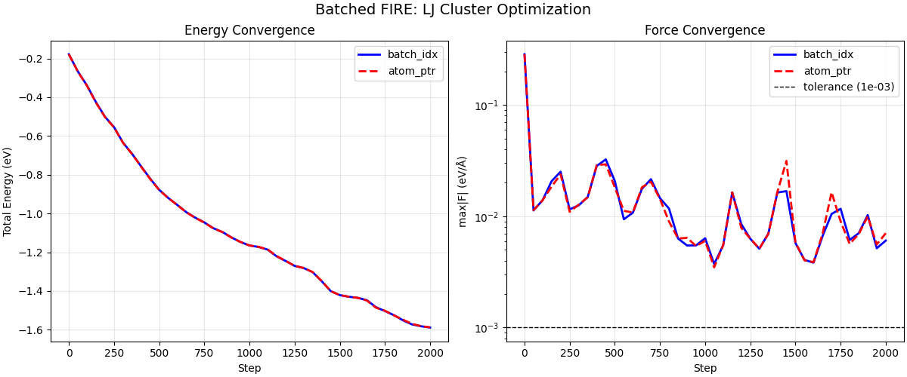

Note
Go to the end to download the full example code.
Batched FIRE Optimization with LJ Clusters#
This example demonstrates batched geometry optimization using the FIRE optimizer with two different batching strategies:
batch_idx mode: Each atom is tagged with a system index - Convenient for heterogeneous systems with different atom counts - Uses atomic accumulation (vf, vv, ff arrays must be zeroed each step)
atom_ptr mode (CSR): Atom ranges defined by CSR-style pointers - More efficient for homogeneous batches - No cross-thread synchronization needed - Each system processed by a single thread
Both modes optimize multiple independent LJ clusters in parallel, with per-system FIRE parameters (dt, alpha, counters) that adapt independently.
We use realistic Lennard-Jones argon clusters with neighbor list management, demonstrating a complete batched optimization workflow.
from __future__ import annotations
import matplotlib.pyplot as plt
import numpy as np
import warp as wp
from _dynamics_utils import (
DEFAULT_CUTOFF,
DEFAULT_SKIN,
EPSILON_AR,
MASS_AR,
SIGMA_AR,
BatchedMDSystem,
create_random_box_cluster,
mass_amu_to_internal,
)
from nvalchemiops.batch_utils import create_atom_ptr, create_batch_idx
from nvalchemiops.dynamics.optimizers import fire_step
from nvalchemiops.segment_ops import (
segmented_max_norm,
segmented_sum,
)
# ==============================================================================
# Main Example
# ==============================================================================
wp.init()
device = "cuda:0" if wp.is_cuda_available() else "cpu"
print(f"Using device: {device}")
Using device: cuda:0
Create Batch of LJ Clusters#
We create multiple LJ argon clusters with different sizes. Each cluster is in its own periodic box (isolated cluster approach).
num_systems = 4
atom_counts = [16, 24, 20, 32] # Different sizes per system
total_atoms = sum(atom_counts)
# Box size large enough to avoid self-interaction
box_L = 30.0 # Å
min_dist = 0.9 * SIGMA_AR # Minimum distance for initial placement
print("\nBatch setup:")
print(f" Number of systems: {num_systems}")
print(f" Atoms per system: {atom_counts}")
print(f" Total atoms: {total_atoms}")
print(f" LJ parameters: ε = {EPSILON_AR:.4f} eV, σ = {SIGMA_AR:.2f} Å")
# Generate initial positions for all systems
all_positions = []
all_cells = []
for sys_id, count in enumerate(atom_counts):
pos = create_random_box_cluster(count, box_L, min_dist, seed=42 + sys_id)
all_positions.append(pos)
all_cells.append(np.eye(3, dtype=np.float64) * box_L)
# Concatenate into batched arrays
positions_np = np.concatenate(all_positions, axis=0)
cells_np = np.stack(all_cells, axis=0)
batch_idx_np = np.concatenate(
[np.full(count, sys_id, dtype=np.int32) for sys_id, count in enumerate(atom_counts)]
)
# Create masses (converted to internal units)
masses_np = mass_amu_to_internal(np.full(total_atoms, MASS_AR, dtype=np.float64))
# Create Warp arrays
positions = wp.array(positions_np, dtype=wp.vec3d, device=device)
velocities = wp.zeros(total_atoms, dtype=wp.vec3d, device=device)
masses = wp.array(masses_np, dtype=wp.float64, device=device)
# Create batching arrays using nvalchemiops.batch_utils
atom_counts_wp = wp.array(np.array(atom_counts, dtype=np.int32), device=device)
atom_ptr = wp.zeros(num_systems + 1, dtype=wp.int32, device=device)
create_atom_ptr(atom_counts_wp, atom_ptr)
batch_idx = wp.zeros(total_atoms, dtype=wp.int32, device=device)
create_batch_idx(atom_ptr, batch_idx)
print(f" batch_idx shape: {batch_idx.shape}")
print(f" atom_ptr shape: {atom_ptr.shape}")
print(f" atom_ptr values: {atom_ptr.numpy()}")
# Create batched MD system (using BatchedMDSystem)
lj_system = BatchedMDSystem(
positions=positions_np,
cells=cells_np,
batch_idx=batch_idx_np,
num_systems=num_systems,
masses=masses_np,
epsilon=EPSILON_AR,
sigma=SIGMA_AR,
cutoff=DEFAULT_CUTOFF,
skin=DEFAULT_SKIN,
switch_width=1.0, # Smooth cutoff for optimization
device=device,
)
Batch setup:
Number of systems: 4
Atoms per system: [16, 24, 20, 32]
Total atoms: 92
LJ parameters: ε = 0.0104 eV, σ = 3.40 Å
batch_idx shape: (92,)
atom_ptr shape: (5,)
atom_ptr values: [ 0 16 40 60 92]
FIRE Parameters (per-system)#
Each system has its own FIRE parameters that adapt independently.
dt0 = 1.0
dt_max = 10.0
dt_min = 1e-3
alpha0 = 0.1
f_inc = 1.1
f_dec = 0.5
f_alpha = 0.99
n_min = 5
maxstep = 0.2 * SIGMA_AR # Max step in Å
# Per-system arrays (shape (B,) for batched mode)
dt = wp.array([dt0] * num_systems, dtype=wp.float64, device=device)
alpha = wp.array([alpha0] * num_systems, dtype=wp.float64, device=device)
alpha_start = wp.array([alpha0] * num_systems, dtype=wp.float64, device=device)
f_alpha_arr = wp.array([f_alpha] * num_systems, dtype=wp.float64, device=device)
dt_min_arr = wp.array([dt_min] * num_systems, dtype=wp.float64, device=device)
dt_max_arr = wp.array([dt_max] * num_systems, dtype=wp.float64, device=device)
maxstep_arr = wp.array([maxstep] * num_systems, dtype=wp.float64, device=device)
n_steps_positive = wp.zeros(num_systems, dtype=wp.int32, device=device)
n_min_arr = wp.array([n_min] * num_systems, dtype=wp.int32, device=device)
f_dec_arr = wp.array([f_dec] * num_systems, dtype=wp.float64, device=device)
f_inc_arr = wp.array([f_inc] * num_systems, dtype=wp.float64, device=device)
# Accumulators for batch_idx mode (shape (B,))
vf = wp.zeros(num_systems, dtype=wp.float64, device=device)
vv = wp.zeros(num_systems, dtype=wp.float64, device=device)
ff = wp.zeros(num_systems, dtype=wp.float64, device=device)
uphill_flag = wp.zeros(num_systems, dtype=wp.int32, device=device)
Method 1: batch_idx Optimization#
In batch_idx mode, each atom is tagged with its system index. The kernel uses atomic operations to accumulate vf, vv, ff per system.
print("\n" + "=" * 80)
print("METHOD 1: batch_idx BATCHING")
print("=" * 80)
# Reset state for batch_idx run
positions_bidx = wp.array(positions_np.copy(), dtype=wp.vec3d, device=device)
velocities_bidx = wp.zeros(total_atoms, dtype=wp.vec3d, device=device)
dt_bidx = wp.array([dt0] * num_systems, dtype=wp.float64, device=device)
alpha_bidx = wp.array([alpha0] * num_systems, dtype=wp.float64, device=device)
n_steps_pos_bidx = wp.zeros(num_systems, dtype=wp.int32, device=device)
# Update LJ system positions
wp.copy(lj_system.wp_positions, positions_bidx)
max_steps = 2000
force_tol = 1e-3 # eV/Å
log_interval = 200
check_interval = 50
# History
bidx_energy_hist = []
bidx_maxf_hist = []
print(f"\nRunning batch_idx optimization ({max_steps} max steps)...")
print(f"Force tolerance: {force_tol:.1e} eV/Å")
print("-" * 70)
print(f"{'Step':>6} {'Total E':>14} {'max|F|':>12} {'Converged':>12}")
print("-" * 70)
for step in range(max_steps):
# Update positions in LJ system and compute forces
wp.copy(lj_system.wp_positions, positions_bidx)
energies = lj_system.compute_forces()
# Zero accumulators before each step (required for batch_idx mode)
vf.zero_()
vv.zero_()
ff.zero_()
# FIRE step with batch_idx
fire_step(
positions=positions_bidx,
velocities=velocities_bidx,
forces=lj_system.wp_forces,
masses=masses,
alpha=alpha_bidx,
dt=dt_bidx,
alpha_start=alpha_start,
f_alpha=f_alpha_arr,
dt_min=dt_min_arr,
dt_max=dt_max_arr,
maxstep=maxstep_arr,
n_steps_positive=n_steps_pos_bidx,
n_min=n_min_arr,
f_dec=f_dec_arr,
f_inc=f_inc_arr,
uphill_flag=uphill_flag,
vf=vf,
vv=vv,
ff=ff,
batch_idx=batch_idx,
)
# Check convergence at intervals
if step % check_interval == 0 or step == max_steps - 1:
# Use GPU-accelerated segmented ops for reductions
system_energies = wp.zeros(num_systems, dtype=wp.float64, device=device)
segmented_sum(energies, batch_idx, system_energies)
max_forces = wp.zeros(num_systems, dtype=wp.float64, device=device)
segmented_max_norm(lj_system.wp_forces, batch_idx, max_forces)
# Sync and convert to numpy for logging
wp.synchronize()
system_energies_np = system_energies.numpy()
max_forces_np = max_forces.numpy()
total_energy = system_energies_np.sum()
global_max_f = max_forces_np.max()
num_converged = (max_forces_np < force_tol).sum()
bidx_energy_hist.append(total_energy)
bidx_maxf_hist.append(global_max_f)
if step % log_interval == 0 or step == max_steps - 1:
print(
f"{step:>6d} {total_energy:>14.6f} {global_max_f:>12.2e} {num_converged:>8d}/{num_systems}"
)
if num_converged == num_systems:
print(f"\nAll systems converged at step {step}!")
break
print(f"\nFinal per-system energies (batch_idx): {system_energies_np}")
print(f"Final max forces per system: {max_forces_np}")
================================================================================
METHOD 1: batch_idx BATCHING
================================================================================
Running batch_idx optimization (2000 max steps)...
Force tolerance: 1.0e-03 eV/Å
----------------------------------------------------------------------
Step Total E max|F| Converged
----------------------------------------------------------------------
0 -0.178234 2.85e-01 0/4
200 -0.500957 2.51e-02 0/4
400 -0.757056 2.83e-02 0/4
600 -0.955593 1.08e-02 0/4
800 -1.076169 1.17e-02 0/4
1000 -1.165266 6.35e-03 1/4
1200 -1.245022 8.51e-03 1/4
1400 -1.349938 1.63e-02 0/4
1600 -1.435439 3.83e-03 2/4
1800 -1.525044 6.13e-03 0/4
1999 -1.588832 6.05e-03 3/4
Final per-system energies (batch_idx): [-0.18828006 -0.4318556 -0.19954096 -0.76915498]
Final max forces per system: [2.03284628e-05 6.04650774e-03 6.81149269e-04 6.91147467e-04]
Method 2: atom_ptr Optimization#
In atom_ptr (CSR) mode, atom ranges are defined by pointers. Each system is processed by a single thread (no cross-thread sync needed). Note: vf, vv, ff are NOT used in this mode.
print("\n" + "=" * 80)
print("METHOD 2: atom_ptr (CSR) BATCHING")
print("=" * 80)
# Reset state for atom_ptr run
positions_ptr = wp.array(positions_np.copy(), dtype=wp.vec3d, device=device)
velocities_ptr = wp.zeros(total_atoms, dtype=wp.vec3d, device=device)
dt_ptr = wp.array([dt0] * num_systems, dtype=wp.float64, device=device)
alpha_ptr = wp.array([alpha0] * num_systems, dtype=wp.float64, device=device)
n_steps_pos_ptr = wp.zeros(num_systems, dtype=wp.int32, device=device)
# History
ptr_energy_hist = []
ptr_maxf_hist = []
print(f"\nRunning atom_ptr optimization ({max_steps} max steps)...")
print(f"Force tolerance: {force_tol:.1e} eV/Å")
print("-" * 70)
print(f"{'Step':>6} {'Total E':>14} {'max|F|':>12} {'Converged':>12}")
print("-" * 70)
for step in range(max_steps):
# Update positions in LJ system and compute forces
wp.copy(lj_system.wp_positions, positions_ptr)
energies = lj_system.compute_forces()
# FIRE step with atom_ptr (NO accumulators needed!)
fire_step(
positions=positions_ptr,
velocities=velocities_ptr,
forces=lj_system.wp_forces,
masses=masses,
alpha=alpha_ptr,
dt=dt_ptr,
alpha_start=alpha_start,
f_alpha=f_alpha_arr,
dt_min=dt_min_arr,
dt_max=dt_max_arr,
maxstep=maxstep_arr,
n_steps_positive=n_steps_pos_ptr,
n_min=n_min_arr,
f_dec=f_dec_arr,
f_inc=f_inc_arr,
uphill_flag=uphill_flag,
atom_ptr=atom_ptr, # Use atom_ptr instead of batch_idx
)
# Check convergence at intervals
if step % check_interval == 0 or step == max_steps - 1:
# Use GPU-accelerated segmented ops for reductions
system_energies = wp.zeros(num_systems, dtype=wp.float64, device=device)
segmented_sum(energies, batch_idx, system_energies)
max_forces = wp.zeros(num_systems, dtype=wp.float64, device=device)
segmented_max_norm(lj_system.wp_forces, batch_idx, max_forces)
# Sync and convert to numpy for logging
wp.synchronize()
system_energies_np = system_energies.numpy()
max_forces_np = max_forces.numpy()
total_energy = system_energies_np.sum()
global_max_f = max_forces_np.max()
num_converged = (max_forces_np < force_tol).sum()
ptr_energy_hist.append(total_energy)
ptr_maxf_hist.append(global_max_f)
if step % log_interval == 0 or step == max_steps - 1:
print(
f"{step:>6d} {total_energy:>14.6f} {global_max_f:>12.2e} {num_converged:>8d}/{num_systems}"
)
if num_converged == num_systems:
print(f"\nAll systems converged at step {step}!")
break
print(f"\nFinal per-system energies (atom_ptr): {system_energies_np}")
print(f"Final max forces per system: {max_forces_np}")
================================================================================
METHOD 2: atom_ptr (CSR) BATCHING
================================================================================
Running atom_ptr optimization (2000 max steps)...
Force tolerance: 1.0e-03 eV/Å
----------------------------------------------------------------------
Step Total E max|F| Converged
----------------------------------------------------------------------
0 -0.178234 2.85e-01 0/4
200 -0.502494 2.38e-02 0/4
400 -0.758346 2.89e-02 0/4
600 -0.956230 1.08e-02 0/4
800 -1.077035 8.96e-03 0/4
1000 -1.164949 6.00e-03 1/4
1200 -1.244722 7.85e-03 1/4
1400 -1.348936 1.66e-02 0/4
1600 -1.435748 3.87e-03 2/4
1800 -1.526346 5.65e-03 0/4
1999 -1.587710 7.04e-03 3/4
Final per-system energies (atom_ptr): [-0.18828006 -0.43059707 -0.19954908 -0.76928375]
Final max forces per system: [1.79293266e-05 7.04489406e-03 6.84750907e-04 7.63501211e-04]
Compare Results#
print("\n" + "=" * 80)
print("COMPARISON")
print("=" * 80)
wp.synchronize()
pos_bidx_np = positions_bidx.numpy()
pos_ptr_np = positions_ptr.numpy()
# Check that both methods converged to similar positions
# (Note: may differ slightly due to different convergence paths)
max_diff = np.max(np.abs(pos_bidx_np - pos_ptr_np))
print(f"\nMax position difference between methods: {max_diff:.2e} Å")
# Final energies comparison
print(f"\nFinal total energy (batch_idx): {bidx_energy_hist[-1]:.6f} eV")
print(f"Final total energy (atom_ptr): {ptr_energy_hist[-1]:.6f} eV")
print(f"Energy difference: {abs(bidx_energy_hist[-1] - ptr_energy_hist[-1]):.2e} eV")
================================================================================
COMPARISON
================================================================================
Max position difference between methods: 1.24e-01 Å
Final total energy (batch_idx): -1.588832 eV
Final total energy (atom_ptr): -1.587710 eV
Energy difference: 1.12e-03 eV
Plot Convergence#
fig, axes = plt.subplots(1, 2, figsize=(12, 5), constrained_layout=True)
# Energy convergence
steps_bidx = np.arange(len(bidx_energy_hist)) * check_interval
steps_ptr = np.arange(len(ptr_energy_hist)) * check_interval
axes[0].plot(steps_bidx, bidx_energy_hist, "b-", lw=2, label="batch_idx")
axes[0].plot(steps_ptr, ptr_energy_hist, "r--", lw=2, label="atom_ptr")
axes[0].set_xlabel("Step")
axes[0].set_ylabel("Total Energy (eV)")
axes[0].set_title("Energy Convergence")
axes[0].legend()
axes[0].grid(True, alpha=0.3)
# Force convergence
axes[1].semilogy(steps_bidx, bidx_maxf_hist, "b-", lw=2, label="batch_idx")
axes[1].semilogy(steps_ptr, ptr_maxf_hist, "r--", lw=2, label="atom_ptr")
axes[1].axhline(
force_tol, color="k", ls="--", lw=1, label=f"tolerance ({force_tol:.0e})"
)
axes[1].set_xlabel("Step")
axes[1].set_ylabel("max|F| (eV/Å)")
axes[1].set_title("Force Convergence")
axes[1].legend()
axes[1].grid(True, alpha=0.3)
fig.suptitle("Batched FIRE: LJ Cluster Optimization", fontsize=14)
plt.show()

Summary#
When to use batch_idx: - Heterogeneous batches (different atom counts per system) - When you already have per-atom system tags from your data pipeline - Simple setup: just create the index array
When to use atom_ptr (CSR): - Homogeneous or semi-homogeneous batches - Maximum performance (no atomic operations) - When atoms are naturally stored contiguously per system
Both methods give equivalent optimization results but may have different performance characteristics depending on batch size and system heterogeneity.
print("\n" + "=" * 80)
print("SUMMARY")
print("=" * 80)
print("""
batch_idx mode:
- Each atom tagged with system index
- Uses atomic accumulation (vf, vv, ff must be zeroed each step)
- Good for heterogeneous systems
- Simple to set up
atom_ptr (CSR) mode:
- Atom ranges defined by CSR pointers
- No accumulator arrays needed (cleaner API)
- Each system processed by single thread
- More efficient for large batches
Both methods support:
- Per-system FIRE parameters that adapt independently
- Downhill check (optional) for energy-based rollback
- Compatible with any force computation (LJ, NN potentials, etc.)
""")
================================================================================
SUMMARY
================================================================================
batch_idx mode:
- Each atom tagged with system index
- Uses atomic accumulation (vf, vv, ff must be zeroed each step)
- Good for heterogeneous systems
- Simple to set up
atom_ptr (CSR) mode:
- Atom ranges defined by CSR pointers
- No accumulator arrays needed (cleaner API)
- Each system processed by single thread
- More efficient for large batches
Both methods support:
- Per-system FIRE parameters that adapt independently
- Downhill check (optional) for energy-based rollback
- Compatible with any force computation (LJ, NN potentials, etc.)
Total running time of the script: (0 minutes 2.821 seconds)